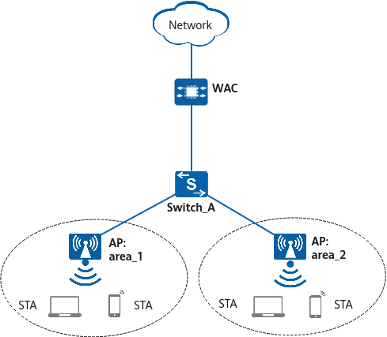

A large number of APs are deployed in an office building. The APs connect to the WAC through Switch_A to provide wireless services for users. It will be a heavy workload to manually configure radio parameters (such as the channel) for the APs one by one. The enterprise IT department requires that the WAC automatically allocate channels to the APs based on radio environments to simplify network deployment.

Before configuring radio calibration, ensure that the network connectivity is normal and APs can go online. For details about the basic networking example, see Configuration Examples for WLAN STA Management.
To complete the configuration, you need the following data:
Configure radio calibration so that the WAC can automatically allocate proper operating channels to APs.
Radio calibration is not applicable to scenarios where APs cannot detect each other, for example, APs use directional antennas, are far from each other, or have obstacles between them.
Radio calibration is not applicable to high-density, rail transportation, or outdoor coverage (directional antennas) scenarios.
If a radio works in monitoring mode, the radio does not participate in calibration.
Configure multicast packet suppression on interfaces directly connecting the device to APs.
For details on how to configure traffic suppression, see How Do I Configure Multicast Packet Suppression to Reduce Impact of a Large Number of Low-Rate Multicast Packets on the Wireless Network?
<WAC> system-view [WAC] wlan [WAC-wlan] ap-group name ap-group1 [WAC-wlan-ap-group-ap-group1] radio 0 [WAC-wlan-ap-group-ap-group1-radio-0] calibrate auto-channel-select enable [WAC-wlan-ap-group-ap-group1-radio-0] calibrate auto-txpower-select enable [WAC-wlan-ap-group-ap-group1-radio-0] quit [WAC-wlan-ap-group-ap-group1] radio 1 [WAC-wlan-ap-group-ap-group1-radio-1] calibrate auto-channel-select enable [WAC-wlan-ap-group-ap-group1-radio-1] calibrate auto-txpower-select enable [WAC-wlan-ap-group-ap-group1-radio-1] quit [WAC-wlan-ap-group-ap-group1] quit
# Create the air scan profile wlan-airscan and configure the scan channel set, scan interval, and scan duration. By default, an air scan channel set contains all channels supported by the country code of an AP.
[WAC-wlan] air-scan-profile name wlan-airscan [WAC-wlan-air-scan-prof-wlan-airscan] scan-channel-set country-channel [WAC-wlan-air-scan-prof-wlan-airscan] scan-period 80 [WAC-wlan-air-scan-prof-wlan-airscan] scan-interval 10000 [WAC-wlan-air-scan-prof-wlan-airscan] quit
# Create the 2.4 GHz radio profile wlan-radio2g and bind the air scan profile wlan-airscan to the 2.4 GHz radio profile.
[WAC-wlan] radio-2g-profile name wlan-radio2g [WAC-wlan-radio-2g-prof-wlan-radio2g] air-scan-profile wlan-airscan [WAC-wlan-radio-2g-prof-wlan-radio2g] quit
# Create the 5 GHz radio profile wlan-radio5g and bind the air scan profile wlan-airscan to the 5 GHz radio profile.
[WAC-wlan] radio-5g-profile name wlan-radio5g [WAC-wlan-radio-5g-prof-wlan-radio5g] air-scan-profile wlan-airscan [WAC-wlan-radio-5g-prof-wlan-radio5g] quit
# Bind the 2.4 GHz radio profile wlan-radio2g and 5 GHz radio profile wlan-radio5g to the AP group ap-group1.
[WAC-wlan] ap-group name ap-group1 [WAC-wlan-ap-group-ap-group1] radio-2g-profile wlan-radio2g radio 0 Warning: This action may cause service interruption. Continue? [Y/N]: Y [WAC-wlan-ap-group-ap-group1] radio-5g-profile wlan-radio5g radio 1 Warning: This action may cause service interruption. Continue? [Y/N]: Y [WAC-wlan-ap-group-ap-group1] quit
# Manually trigger radio calibration.
[WAC-wlan] calibrate manual startup Warning: The operation may cause business interruption, Continue? [Y/N]:Y
[WAC-wlan] display radio all CH/BW:Channel/Bandwidth CE:Current EIRP (dBm) ME:Max EIRP (dBm) CU:Channel utilization CCI/TX/RX/NF:Co-channel interference(%)/Transmit time ratio(%)/Receive time ratio(%)/Noise floor(dBm) ST:Status WM:Working mode (normal/monitor/monitor dual-band-scan/monitor proxy dual-band-scan) CMD:Shut down by a command ERR:Shut down due to an error CAL:Shut down due to radio calibration LPC:Shut down due to insufficient power supply 3GPP:Shut down due to 3GPP restrictions Total:2 ----------------------------------------------------------------------------------------------------- AP ID Name RfID Band Type ST CH/BW CE/ME STA CU CCI/TX/RX/NF WM ----------------------------------------------------------------------------------------------------- 1 8760-x1-pro 0 2.4G 11ax on 6/20M 29/29 0 26% 30/0/0/-51 normal 1 8760-x1-pro 1 5G 11ax on 36/40M+ 34/34 0 3% 30/0/0/-51 normal -----------------------------------------------------------------------------------------------------
# After calibration is completed, it is recommended that APs be configured to perform scheduled radio calibration in off-peak hours, for example, from 00:00 am to 06:00 am.
[WAC-wlan] calibrate enable schedule time 03:00:00
# sysname WAC # wlan air-scan-profile name wlan-airscan scan-period 80 radio-2g-profile name wlan-radio2g air-scan-profile wlan-airscan radio-5g-profile name wlan-radio5g air-scan-profile wlan-airscan ap-group name ap-group1 radio 0 radio-2g-profile wlan-radio2g vap-profile wlan-net wlan 1 radio 1 radio-5g-profile wlan-radio5g vap-profile wlan-net wlan 1 # return